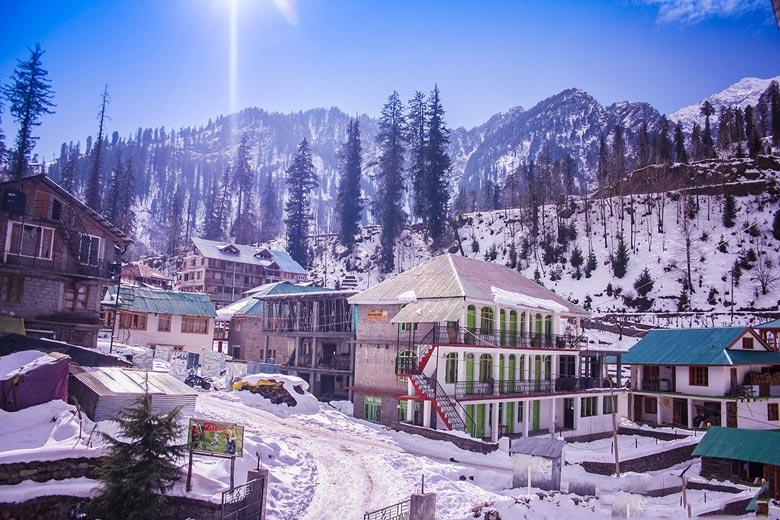

DESCRIPTION (Please note that we have tie-ups with hotels at respective destinations and
prices include ticket and hotel booking per person)
SIKKIM
Places to visit:Gangtok, Pelling, Lachung, Yuksom, Ravangla, Namchi and the Yumthang Valley. Cities:6
Days:6 Best Period to Visit:October to January Price:Rs. 18,000
HIMACHAL
Places to visit:Manali, Khajjair, Dalhousie, Shimla, Kasauli, Tirthan Valley,
Dharamshala Cities:7 Days:10 Best Period to Visit:February to June Price:Rs. 18,000
ANDAMAN NICOBAR
Places to Visit:Radhanagar Beach, Cellular Jail, Ross Island, Port Blair, Havelock Island, Anthropological Museum, Howrah Bridge Cities:4 Days:6 Best Period to Visit:October to March
Price:Rs. 25,000
AASAM
Places to Visit:Kaziranga National Park, Manas National Park,Kamakhya Temple, Kakochang Waterfalls,
Tocklai Tea Research Centre, Orang National Park, Dipor Bil, Guwahati Planetarium, Padam Pukhuri,
Panimoor Falls, Haflong Hill and lake, Cities:7 Days:13 Best Period to Visit:October to
March Price:Rs. 15,000